我们已经步入了一个时代，在这个时代，我们正在建造智能机器。在基于数学/统计学的智能算法的帮助下，这种聪明或智能被注入到机器中。这些算法使系统或机器能够在没有任何人工干预的情况下自动学习。作为一个例子，今天我们被大量的移动应用所包围。WhatsApp(目前归脸书所有)中最主要的消息应用之一。每当我们在WhatsApp的文本框中输入一条信息时，例如，我们输入 I am...，我们得到几个单词提示弹出，如..回家、拉胡尔、今晚出行等等。我们能猜出这里发生了什么吗？为什么？出现了多个问题:
让我们在这一章中回答所有这些问题。
在本章中，我们将讨论以下主题:
统计模型是通过数据和数学或统计获得的真实情况的近似值，在这里充当使能器。这个近似值用于预测一个事件。统计模型只不过是一个数学方程式。
例如，假设我们向银行申请住房贷款。银行问我们什么？他们要求我们做的第一件事是提供许多文件，如工资条、身份证明文件、关于我们将要购买的房子的文件、公用事业账单、我们当前贷款的数量、我们有多少家属等等。所有这些文件只不过是银行用来评估和检查我们信誉的数据:
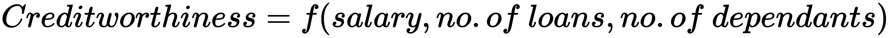
这意味着你的信用度是工资、贷款数量、家属数量等的函数。我们可以用数学方法得出这个等式或关系。
统计模型是一个数学等式，它是使用特定业务场景的给定数据得出的。
在下一节中，我们将看到模型如何学习，以及模型如何不断变得更好。
学习曲线背后的基本前提是，你花在做某事上的时间越多，你往往会做得越好。最终，完成一项任务的时间持续下降。这有不同的名称，如改进曲线、进度曲线、启动功能。
例如，当你开始学习驾驶手动挡汽车时，你会经历一个学习周期。最初，你要格外小心地操作刹车、离合器和齿轮。你必须不断提醒自己何时以及如何操作这些组件。
但是，随着时间的推移，你继续练习，你的大脑会习惯并适应整个过程。随着每一天的过去，你的驾驶会越来越平稳，你的大脑会在没有任何意识的情况下做出反应。这叫做潜意识智能。你通过大量的练习达到这个阶段，并从有意识的智能过渡到有循环的潜意识智能。
让我来定义机器学习及其组成部分，这样当它抛给你时，你就不会被大量的术语迷惑了。
用Tom Mitchell的话来说，“如果一个计算机程序在T类任务中的性能，如P所测量的，随着经验E的增加而提高，那么就可以说它从经验E中学习了一些任务T和性能测量P。”此外，另一种理论认为，机器学习是在没有明确编程的情况下赋予计算机学习能力的领域。
举个例子，如果一台计算机已经给了诸如， [(父亲，母亲)，(叔叔，阿姨)，(兄弟，姐妹)] 这样的案例，基于此，它需要找出(儿子，)。也就是说，给定儿子，关联项是什么？为了解决这个问题，计算机程序将仔细检查以前的记录，并在从一个记录跳到另一个记录时，试图理解和学习这些组合的关联和模式。这被称为学习，它通过算法发生。记录多了，也就是经验多了，机器变得越来越聪明。
让我们看看机器学习的不同分支，如下图所示:
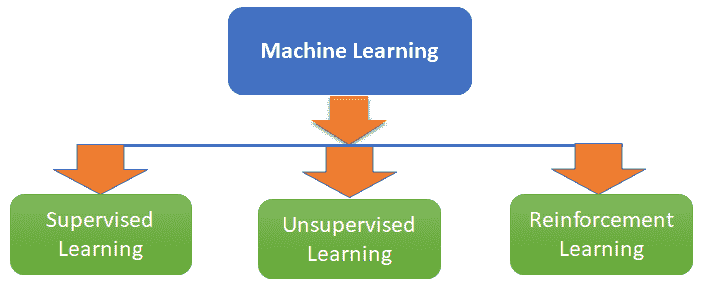
我们将对前面的图表解释如下:
在Wright的模型中，学习曲线函数定义如下:
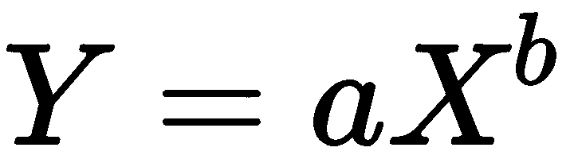
这些变量如下:
下面的曲线有一个垂直轴( y 轴)代表关于特定工作的学习，水平轴对应于学习所花费的时间。一条陡峭的学习曲线可以被理解为快速进步的标志。下图为莱特的学习曲线模型:
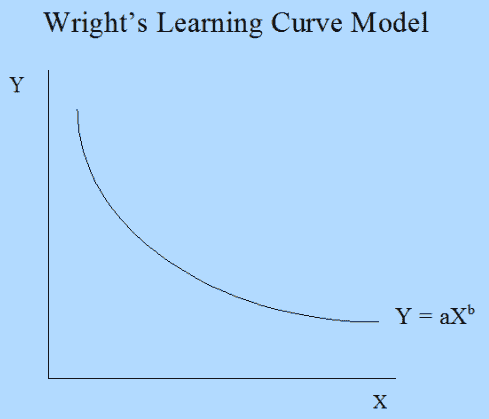
然而，由此产生的问题是，它是如何与机器学习联系在一起的？我们现在将详细讨论这一点。
让我们通过以下步骤来讨论一个恰好是监督学习问题的场景:
第2步和第3步通过取多个实例(训练规模)如10、50和100，并研究训练误差和验证误差，以及它们与多个实例(训练规模)的关系来重复。这条曲线——或关系——在机器学习场景中被称为lT8】收入曲线。
让我们处理一个合并的发电厂数据集。这些特征包括每小时平均环境变量，即温度(T)环境压力(AP)相对湿度 ( RH )和排气真空度 ( V )，以预测工厂每小时净电能输出 ( PE
# importing all the libraries
import pandas as pd
from sklearn.linear_model import LinearRegression
from sklearn.model_selection import learning_curve
import matplotlib.pyplot as plt
#reading the data
data= pd.read_excel("Powerplant.xlsx")
#Investigating the data
print(data.info())
data.head()
由此，我们能够看到数据中变量的数据结构:
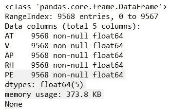
输出如下所示:
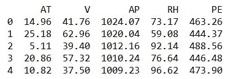
第二个输出让您对数据有很好的感觉。
数据集有五个变量，其中环境温度 ( 在)和PE(目标变量)。
让我们改变数据的训练规模，研究它对学习的影响。为train_size创建一个具有不同训练大小的列表，如以下代码所示:
让我们生成learning_curve:
我们得到以下输出:
# As discussed here we are trying to vary the size of training set
train_size = [1, 100, 500, 2000, 5000]
features = ['AT', 'V', 'AP', 'RH']
target = 'PE'
# estimating the training score & validation score
train_sizes, train_scores, validation_scores = learning_curve(estimator = LinearRegression(), X = data[features],y = data[target], train_sizes = train_size, cv = 5,scoring ='neg_mean_squared_error')
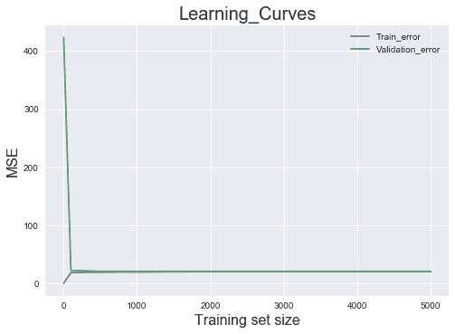
# Generating the Learning_Curve
train_scores_mean = -train_scores.mean(axis = 1)
validation_scores_mean = -validation_scores.mean(axis = 1)
import matplotlib.pyplot as plt
plt.style.use('seaborn')
plt.plot(train_sizes, train_scores_mean, label = 'Train_error')
plt.plot(train_sizes, validation_scores_mean, label = 'Validation_error')
plt.ylabel('MSE', fontsize = 16)
plt.xlabel('Training set size', fontsize = 16)
plt.title('Learning_Curves', fontsize = 20, y = 1)
plt.legend()
从上图可以看出，当训练规模为1时，训练误差为0，但验证误差超过了 400 。
随着我们继续增加训练集的大小(从1到100)，训练误差继续上升。然而，随着模型在验证集上表现得更好，验证误差开始直线下降。训练规模达到500大关后，验证误差和训练误差开始收敛。那么，从中可以推断出什么呢？无论培训岗位的规模有多大，模型的性能都不会改变。但是，如果您尝试添加更多功能，可能会有所不同，如下图所示:
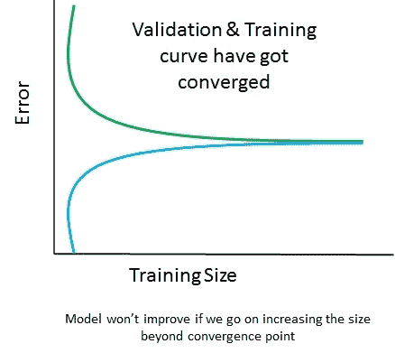
上图显示验证和定型曲线已经收敛，因此添加定型数据没有任何帮助。但是，在下图中，曲线尚未收敛，因此添加训练数据将是一个好主意:
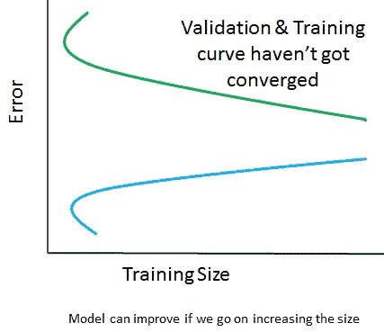
曲线拟合
到目前为止，我们已经了解了学习曲线及其意义。然而，只有当我们试图根据可用的数据和特征拟合曲线时，它才会出现。但是曲线拟合是什么意思呢？让我们试着理解这一点。
建立关系(曲线拟合)无非是提出一个数学函数，它应该能够以一种最适合数据集的方式来解释行为模式。
我们进行曲线拟合有多种原因:
进行系统模拟和优化
确定中间点的值(插值)
下图显示了多项式但精确的拟合:
下图显示了直线，但完全吻合:
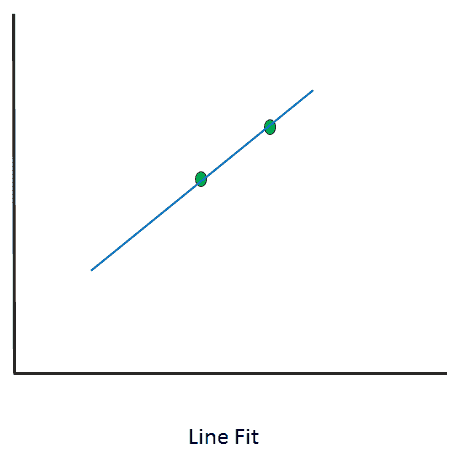
最佳拟合:曲线不通过所有的点。会有与此相关的残留。
让我们看一些不同的场景，并研究它们来理解这些差异。
这里，我们将拟合两个数字的曲线:
由此，我们将获得以下输出:
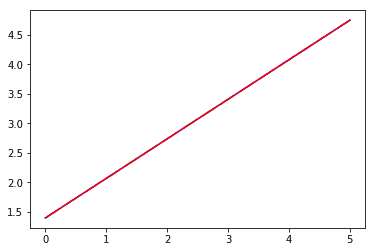
# importing libraries
import numpy as np
import matplotlib.pyplot as plt
from scipy.optimize import curve_fit
# writing a function of Line
def func(x, a, b):
return a + b * x
x_d = np.linspace(0, 5, 2) # generating 2 numbers between 0 & 5
y = func(x_d,1.5, 0.7)
y_noise = 0.3 * np.random.normal(size=x_d.size)
y_d = y + y_noise
plt.plot(x_d, y_d, 'b-', label='data')
popt, pcov = curve_fit(func, x_d, y_d) # fitting the curve
plt.plot(x_d, func(x_d, *popt), 'r-', label='fit')
这里，我们使用了两个点来拟合直线，我们可以很好地看到它变成了一个精确拟合。当介绍三点时，我们会得到以下几点:
运行整个代码并关注输出:
x_d = np.linspace(0, 5, 3) # generating 3 numbers between 0 & 5
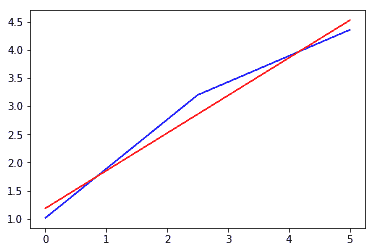
现在，你可以看到噪声的漂移和影响。它开始呈现出曲线的形状。一条线可能不太适合这里(不过，现在说还为时过早)。它不再是完全合适的了。
如果我们尝试引入100分并研究它的影响呢？现在，我们知道如何引入点数。
通过这样做，我们得到以下输出:
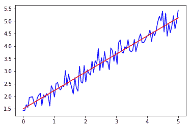
这不是一个精确的拟合，而是试图概括整个数据集的最佳拟合。
This is not an exact fit, but rather a best fit that tries to generalize the whole dataset.
残留的；剩余的
残差是观测值或真实值与预测值(拟合值)之间的差值。例如，在下图中，其中一个残差是 (A-B) ，其中 A 是观测值， B 是拟合值:
前面的散点图描述了我们正在拟合一条可以代表所有数据点行为的线。然而，值得注意的一点是，这条线并不通过所有的点。大部分点都下线了。
残差的和与均值将始终为0。 ∑e =0 和 e =0 的平均值。
统计建模——利奥·布雷曼的两种文化
每当我们试图分析数据并最终做出预测时，我们会考虑两种方法，这两种方法都是由伯克利教授Leo Breiman在2001年发表的题为统计建模:两种文化的论文中发现的。
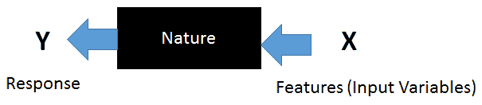
一个 X ( 特性)的向量经历了一个自然盒子，它被翻译成一个响应。一个自然框试图在 X 和 Y 之间建立关系。通常，与此分析相关的目标如下:
预测:预测未来输入特征的响应
信息:找出并理解响应和驱动输入变量之间的关联
算法建模文化:在这种方法中，预先设计的算法被用来做更好的近似。在这里，算法使用复杂的数学来得出结论，并在自然的盒子里行动。随着更好的计算能力和使用这些模型，很容易复制驱动因素，因为模型会继续运行，直到它学习和理解驱动结果的模式。它使我们能够解决更复杂的问题，并且更加强调准确性。随着更多的数据通过，它可以给出比数据建模文化更好的结果。
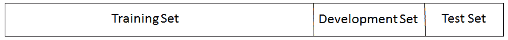
让我们来看看拥有这三个集合的目标:
训练集 : 训练集用于训练模型。当我们应用任何算法时，我们都是在拟合训练集中的参数。在神经网络的情况下，找出权重。
假设在一个场景中，我们试图拟合不同次数的多项式:
f(x) = a+ bx → 1 st 次多项式
我们不能根据训练误差来评估模型有多好。如果我们这样做，它将把我们引向一个有偏见的模型，可能无法在看不见的数据上表现良好。为了解决这个问题，我们需要进入开发环境。
开发 设置:这也叫保持设置或验证设置。这一组的目标是调整我们从训练组获得的参数。这也是评估模型性能的一部分。基于它的性能，我们必须采取措施来调整参数。例如，控制学习速率、最小化过拟合以及选择批次中的最佳模型都发生在开发集中。这里，再次计算开发集误差，并且在看到哪个模型给出的误差最小之后，进行模型的调整。在这个阶段给出最小误差的模型仍然需要调整以最小化过度拟合。一旦我们确信了最佳模型，它就被选中了，我们就向测试集前进。
测试集:测试集主要用于评估最佳选择的模型。在这个阶段，计算模型的精度，如果模型的精度没有太偏离训练精度和开发精度，我们就发送这个模型进行部署。
三个不同集合的另一个例子如下:
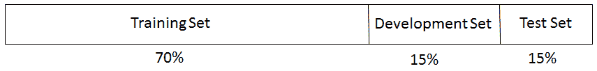
但是我们有大数据要处理的场景呢？例如，如果我们有10，000，000条记录或观察值，我们将如何划分数据？在这样的场景中，ML实践者获取训练集的大部分数据——多达98-99%——剩下的数据被划分给开发和测试集。这样做是为了让从业者可以考虑不同种类的场景。因此，即使我们有1%的数据用于开发，同样的数据用于测试，我们最终都会得到100，000条记录，这是一个很好的数字。
偏差-方差权衡
在我们开始建模并试图找出折衷方案之前，让我们从下图中了解一下什么是偏差和方差:
在偏差-方差权衡中会产生两种类型的误差，如下所示:
训练误差:这是在使用训练输入预测输出时，拟合值与实际值的偏差。这个误差主要取决于模型的复杂性。随着模型复杂性的增加，误差似乎直线下降。
开发误差:这是预测值与实际值偏差的度量，被开发集用作输入(同时使用根据训练数据训练的相同模型)。这里，预测是基于看不见的数据进行的。我们需要最小化这个误差。最小化这个误差将决定这个模型在实际场景中有多好。
上图可以解释如下:
欠拟合:由于数据集中现有的变量，每个数据集都有特定的模式和属性。除此之外，它还具有随机和潜在的模式，这是由不属于数据集的变量引起的。无论何时我们提出一个模型，这个模型都应该从现有的变量中学习模式。然而，这些模式的学习也取决于你的算法有多好，多健壮。假设我们选择了一个模型，它甚至不能从数据集中导出基本模式——这被称为欠拟合。在前面的图中，这是一个分类的场景，我们试图对 x 和 o 进行分类。在图1中，我们尝试使用线性分类算法对数据进行分类，但我们可以看到这会导致大量的错误分类错误。这是一个不适应的例子。
过度拟合:从图1开始，我们试图使用复杂的算法找出模式并进行分类。值得注意的是，错误分类误差在第二个图中已经下降，因为这里使用的复杂模型能够检测模式。开发错误(如上图所示)也会减少。我们将增加模型的复杂性，看看会发生什么。图3表明现在模型中没有错误分类误差。然而，如果我们看它下面的图，我们可以看到开发误差现在太高了。发生这种情况是因为模型正在从由于数据集中不存在的变量而表现出的误导和随机模式中学习。这意味着它已经开始学习设备中存在的噪音。这种现象称为过拟合。
如果训练误差下降，(开发误差 - 训练误差)上升，则意味着高方差情况(上表中的场景1)
如果训练误差和开发误差上升，(开发误差 - 训练误差)下降，则意味着高偏差情况(上表中的场景2)
正规化
对于机器学习建模，我们现在已经对过度拟合的含义有了相当的理解。只是重申一下，当模型学习已经进入数据的噪声时，它试图学习由于随机机会而发生的模式，因此过度拟合发生了。由于这种现象，模型的泛化能力面临危险，并且在看不见的数据上表现不佳。结果是，模型的准确性急剧下降。
We have now got a fair understanding of what overfitting means when it comes to machine learning modeling. Just to reiterate, when the model learns the noise that has crept into the data, it is trying to learn the patterns that take place due to random chance, and so overfitting occurs. Due to this phenomenon, the model's generalization runs into jeopardy and it performs poorly on unseen data. As a result of that, the accuracy of the model takes a nosedive.
正则化是一种使模型不会变得复杂以避免过度拟合的技术。
让我们来看看下面的回归方程:
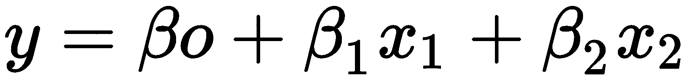
对此的损失函数如下:
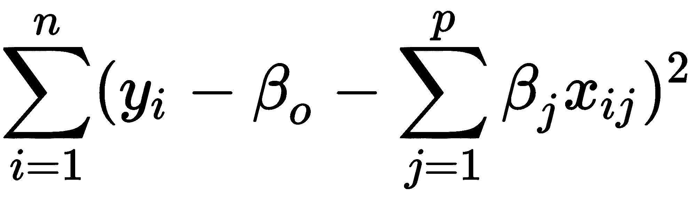
损失函数将有助于调整系数并检索最佳系数。在训练数据中有噪声的情况下，系数不能很好地概括，并且会陷入过拟合。正则化有助于通过使这些估计或系数向0下降来消除这种情况。
现在，我们将讨论两种类型的正规化。在后面的章节中，其他类型将被涵盖。
岭回归(L2)
由于岭回归，我们需要对损失函数做一些修改。原始损失函数增加了收缩分量:
现在，这个修改的损失函数需要被最小化以调整估计或系数。这里，lambda正在调整调整损失函数的参数。也就是说，它决定了应该对模型的灵活性进行多少惩罚。模型的灵活性取决于系数。如果模型的系数上升，灵活性也会上升，这对我们的模型来说不是一个好兆头。同样，随着系数的下降，灵活性受到限制，模型开始表现得更好。每个估计参数的收缩使模型在这里变得更好，这就是岭回归的作用。当λ越来越高，也就是 λ → ∞ 时，惩罚分量上升，估计开始缩小。但是，当 λ → 0 时，罚分量减小，开始变成一个普通最小二乘 ( OLS )用于估计线性回归中的未知参数。
最小绝对收缩和选择算子
最小绝对收缩和选择算子 ( 套索)也被称为 L1 。在这种情况下，前面的惩罚参数被替换为 |βj| :
通过最小化前面的函数，找到并调整系数。在这种情况下，随着λ变大， λ → ∞ ，惩罚分量上升，因此估计值开始缩小并变为0(这在岭回归的情况下不会发生；相反，它将接近于0)。
交叉验证和模型选择
我们已经讨论过过度拟合。这与模型的稳定性有关，因为模型的真正测试发生在它处理未知的新数据时。一个模型最重要的一个方面是，除了常规模式之外，它不应该拾取噪声。
在这里，我们将坚持使用k-fold交叉验证，并了解如何使用它。
k倍交叉验证
让我们来看一下k倍交叉验证的步骤:
保留一组用于测试/开发，模型建立在其余数据上( k-1 )。也就是说，其余的数据构成了训练数据。
每个子集都有一次机会成为验证/测试集，因为大多数数据都用作训练集。这有助于减少偏差。同时，几乎所有的数据都被用作验证集，这减少了方差。
如上图所示，已经选择了 k = 5 。这意味着我们必须将整个数据集分成五个子集。在第一次迭代中，子集5成为测试数据，其余的成为训练数据。同样，在第二次迭代中，子集4变成测试数据，其余的变成训练数据。这将持续五次迭代。
现在，让我们尝试在Python中使用K neighbors分类器来分割训练和测试数据:
使用交叉验证的模型选择
通过使用以下代码，我们可以利用交叉验证来找出哪个模型执行得更好:
from sklearn.datasets import load_breast_cancer # importing the dataset
from sklearn.cross_validation import train_test_split,cross_val_score # it will help in splitting train & test
from sklearn.neighbors import KNeighborsClassifier
from sklearn import metrics
BC =load_breast_cancer()
X = BC.data
y = BC.target
X_train, X_test, y_train, y_test = train_test_split(X, y, random_state=4)
knn = KNeighborsClassifier(n_neighbors=5)
knn.fit(X_train, y_train)
y_pred = knn.predict(X_test)
print(metrics.accuracy_score(y_test, y_pred))
knn = KNeighborsClassifier(n_neighbors=5)
scores = cross_val_score(knn, X, y, cv=10, scoring='accuracy')
print(scores)
print(scores.mean())
引导中的0.632规则
knn = KNeighborsClassifier(n_neighbors=20)
print(cross_val_score(knn, X, y, cv=10, scoring='accuracy').mean())
在我们进入自举的0.632规则之前，我们需要理解什么是自举。Bootstrapping是这样一个过程，其中使用由 n 个观察值组成的总体中的替换值来执行随机采样。在这种情况下，样本可以有重复的观察值。例如，如果总体是(2，3，4，5，6)并且我们正在尝试抽取两个大小为4的随机样本进行替换，那么样本1将是(2，3，3，6)，样本2将是(4，4，6，2)。
# 10-fold cross-validation with logistic regression
from sklearn.linear_model import LogisticRegression
logreg = LogisticRegression()
print(cross_val_score(logreg, X, y, cv=10, scoring='accuracy').mean())
我们已经看到，在使用预测时，训练误差的估计是 1/n ∑L(y i， y-hat) 。这就是损失函数:
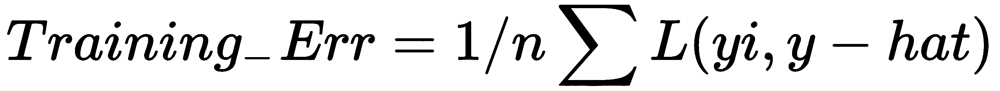
交叉验证是一种估计样本误差预期输出的方法:
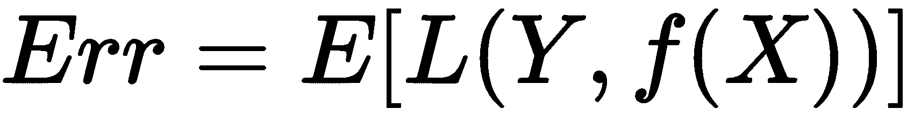
但是，在k倍交叉验证的情况下，如下所示:
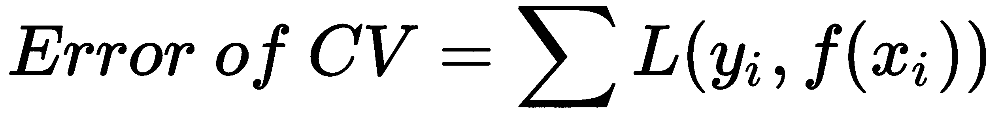
这里，训练数据是 X=(x1，x2.....，xn) 并且我们从这个集合 (z1，.....，zb) 其中每个子是一组 n 样本。
在这种情况下，以下是我们的样本外误差:
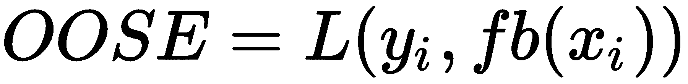
这里， fb(xi) 是来自模型的 xi 处的预测值，该模型已被拟合到引导数据集。
不幸的是，这不是一个特别好的估计量，因为用于产生 fb(xi) 的自举样本可能包含 xi 。OOSE解决了过拟合问题，但仍有偏差。这种偏差是由于替换抽样导致的自举样本中不明显的观察结果造成的。每个样本中不同观察值的平均数量约为 0.632n 。为了解决偏差问题，Efron和Tibshirani提出了 0.632 估计量:
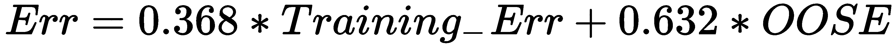
模型评估
让我们看看目前正在使用的一些模型评估技术。
混淆矩阵是一个帮助评估分类模型好坏的表格。当真实值/标签已知时使用。大多数数据科学领域的初学者被混淆矩阵吓倒，认为它看起来比实际更难理解；让我告诉你——这非常简单容易。
有两类:
是:顾客会购买产品
否:顾客不会购买该产品
从前面的矩阵中我们第一眼能得出什么推论？
该分类器总共进行了80次预测。这意味着总共有80名顾客接受了测试，以确定他/她是否会购买该产品。
顾客买了产品，而T2没有。
真阳性(TP) :这些情况下，我们预测客户会购买产品，他们也购买了。
真阴性(TN) :这些是我们预测客户不会购买产品，而他们也没有购买的情况。
误分类率:这是衡量分类器得出错误结果的频率。公式(FP+FN)/总病例数将给出结果。在前面的场景中，误分类率为 (6+4)/80 ，为0.125。因此，在12.5%的情况下，它不会产生正确的结果。也可以计算为(1-精度)。
我们遇到过许多初露头角的数据科学家，他们会构建一个模型，以评估的名义，仅仅满足于总体准确性。然而，这不是评估模型的正确方法。例如，假设有一个数据集，它的响应变量有两个类别:愿意购买产品的客户和不愿意购买产品的客户。假设数据集有95%的客户不愿意购买该产品，有5%的客户愿意购买。假设分类器能够正确预测多数类而不是少数类。所以，如果有100个观察值， TP=0 ， TN= 95 ，其余的分类错误，这仍然会导致95%的准确率。然而，得出这是一个好模型的结论是不正确的，因为它根本不能对少数民族进行分类。
大多数分类器产生0到1之间的分数。下一步是我们设置阈值，基于这个阈值，决定分类。通常，0.5是阈值，如果大于0.5，则创建一个类1，如果阈值小于0.5，则属于另一个类2:
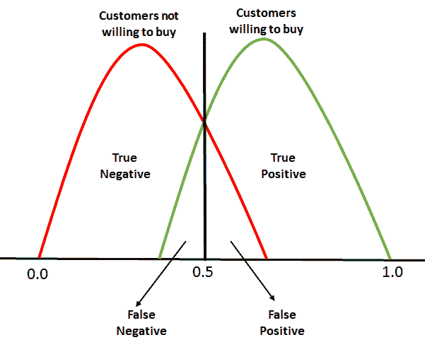
对于ROC来说，在 0.0 和 1.0 之间的每一点都被当作一个阈值，所以阈值线从 0.0 一直移动到 1.0 。阈值将导致我们具有TP、TN、FP和FN。在每个阈值，计算以下指标:
真阳性率= TP/(TP+FN)
真阴性率= TN/(TN + FP)
假阳性率= 1-真阴性率
(TPR和FPR)的计算从0开始。当阈值线为0时，我们将能够对所有愿意购买的客户进行分类(阳性案例)，而那些不愿意购买的客户将被错误分类，因为会有太多的假阳性。这意味着阈值线将从零开始向右移动。随着这种情况的发生，假阳性开始下降，而真阳性将继续增加。
最后，我们需要在阈值的每一点计算TPR和FPR之后，绘制出它们的关系图:
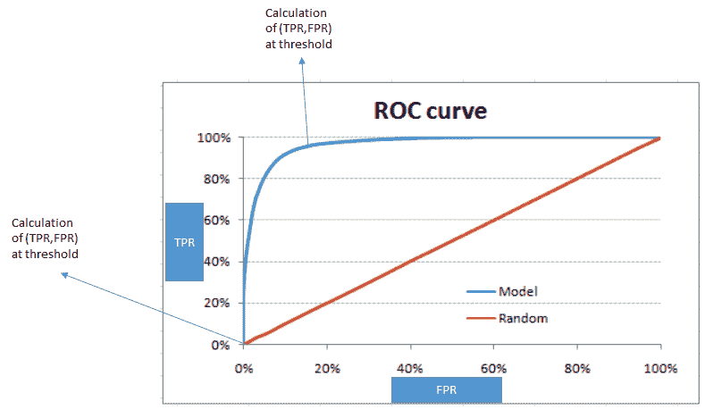
Finally, we will need to plot a graph of the TPR versus FPR after calculating them at every point of the threshold:
红色斜线代表随机分类，即没有模型的分类。完美的ROC曲线将沿着 y 轴，并且将呈现绝对三角形的形状，其将穿过 y 轴的顶部。
ROC下的区域
为了评估模型/分类器，我们需要确定ROC ( AUROC )下的区域。FPR和TPR的最大值为1时，该图的整个面积为1——这里两者都为1。因此，它呈正方形。随机线完美地定位成45度，将整个区域分割成两个对称的等边三角形。这意味着红线下方和上方的面积为0.5。最佳和完美的分类器将是试图获得AUROC为1的分类器。AUROC越高，模型越好。
h-测度
二进制分类必须应用技术，以便能够将独立变量映射到不同的标签。例如，存在许多变量，如性别、收入、现有贷款数量和按时/不按时付款，这些变量被映射以产生一个分数，该分数帮助我们将客户分类为好客户(更倾向于支付)和坏客户。
正如我们已经讨论过的，对任何分类器的真正测试都是在看不见的数据上进行的，这给模型造成了一些小数点的损失。相反，如果我们遇到了类似前面的情况，决策支持系统将不能很好地运行。它将开始产生误导性的结果。
Typically, everyone seems to be caught up with the misclassification rate or derived form since the area under curve (AUC) is known to be the best evaluator of our classification model. You get this rate by dividing the total number of misclassified examples by the total number of examples. But does this give us a fair assessment? Let's see. Here, we have a misclassification rate that keeps something important under wraps. More often than not, classifiers come up with a tuning parameter, the side effect of which tends to be favoring false positives over false negatives, or vice versa. Also, picking the AUC as sole model evaluator can act as a double whammy for us. AUC has got different misclassification costs for different classifiers, which is not desirable. This means that using this is equivalent to using different metrics to evaluate different classification rules.
H-measure克服了不同分类器产生不同误分类代价的情况。它需要一个严重性比率作为输入，该比率检查错误分类0类实例比错误分类1类实例严重多少:
严重性比率=成本_ 0/成本_1
这里， cost_0 > 0 是将0类数据点误分类为1类的代价。
有时考虑归一化成本 c =成本_0/(成本_0 +成本_1) 会更方便。例如， severity.ratio = 2 意味着假阳性的成本是假阴性的两倍。
降维
让我们来讨论一个场景，在这个场景中，我们从一家银行获得了一个数据集，它具有与银行客户相关的特征。这些特征包括客户的收入、年龄、性别、支付行为等等。一旦您查看了数据维度，就会发现有850个特性。你应该建立一个模型来预测客户谁会违约，如果贷款给了。你会考虑所有这些特征并建立模型吗？
降维是解决这一问题的方法之一。这意味着特征空间中维数的减少。
有两种方法可以实现这一点:
特征剔除:这是一个剔除不能给模型增加价值的特征的过程。这样做使得模型非常简单。从奥卡姆剃刀理论中我们知道，在构建模型时，我们应该力求简单。但是，执行此步骤可能会导致信息丢失，因为这些变量的组合可能会对模型产生影响。
特征提取:这是一个我们创建新的独立变量的过程，这些变量是现有变量的组合。基于这些变量的影响，我们要么保留，要么放弃。
新形成的变量(组件)相互独立，这对于数据分布是线性可分的模型构建过程来说是一个福音。线性模型的基本假设是变量相互独立。
为了理解PCA的功能，我们必须熟悉几个术语:
方差:这是平均值的均方差。它也被称为分布，用于测量数据的可变性:
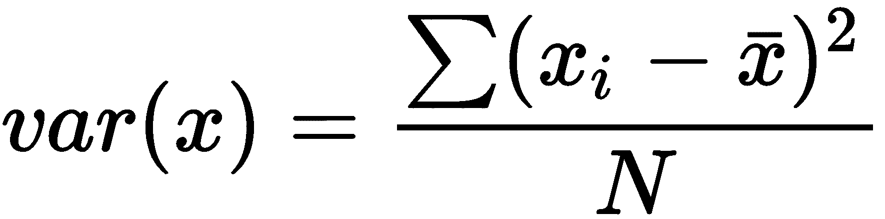
协方差:这是两个变量向同一方向移动的程度的度量:
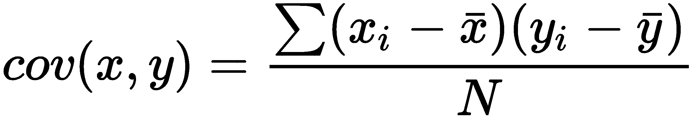
让我们通过讨论以下步骤来了解PCA的工作原理:
让我们将我们的数据集分成 Y 和 X 集合，并且只关注 X 。
取一个矩阵 X 并标准化，平均值为0，标准差为 1 。我们把新矩阵叫做 Z 。
Covariance Matrix = ZTZ
现在我们需要计算 Z T Z 的特征值及其对应的特征向量。典型地，协方差矩阵到 PDP ⁻的本征分解被完成，其中 P 是本征向量的矩阵，并且 D 是对角线上具有本征值并且在其他任何地方都是0值的对角矩阵。
取特征值 λ₁ 、 λ₂ 、…、 λp 从大到小排序。这样做时，相应地对 P 中的特征向量进行排序。称这个特征向量排序矩阵 P* 。
在下一章，我们将学习评估核学习，这是机器学习中最广泛使用的方法。
This chapter also explained cross validation and model selection, the 0.632 rule in bootstrapping, and also ROC and AUC in depth.
In the next chapter, we will study evaluating kernel learning, which is the most widely used approach in machine learning.